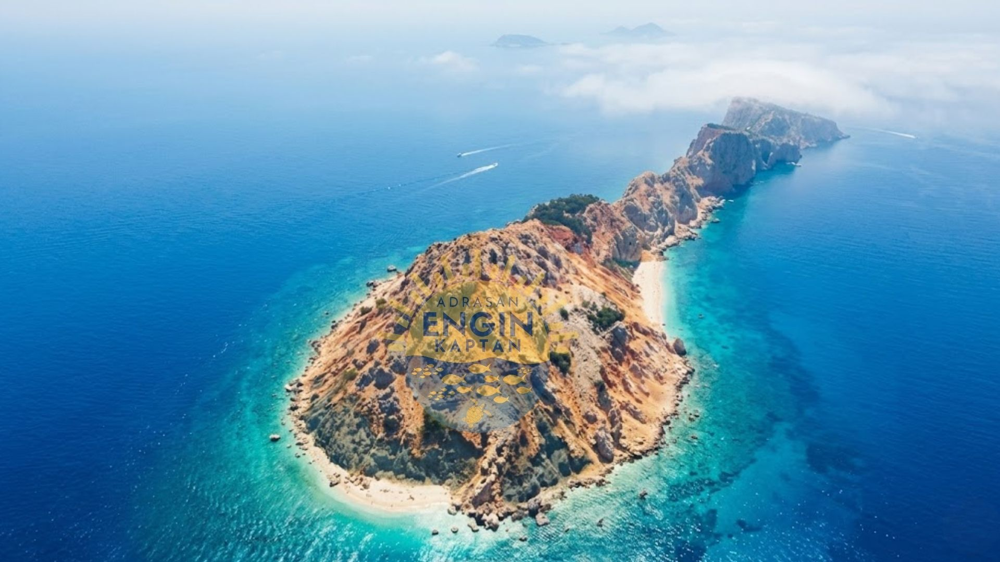

Suluada Tekne Turu
Suluadada mavi ve zaman.
Drone çekimleri, tekne turu kayıtları ve Suluada'nın berrak sularından seçilmiş videolar. Görmeden inanmak zor — izleyin, sonra karar verin.

Tüm videolara YouTube kanalımızdan ulaşabilirsiniz.
Turdan görüntüler.
Suluadada mavi ve zaman.
Drone ile gök yüüznden aşağıya bakmaya ne dersin?
Size özel tekne turu ile daha sakin, daha eğlenceli daha özel...
Youtube bağlantımızı mutlaka ziyaret edin...
Videolarda gördüklerinizi bizzat deneyimlemek için rezervasyon yapın. Tarih ve kişi sayısını yazmanız yeterli.